Welcome!
This user manual contains step-by-step instructions on how to use the internal battery design developed by Innovagrid.
This document will explain how to:
The goal of this circuit is to charge up to 84 molten salt batteries in parallel. There are a few limitations that must be met: batteries cannot be charged above 3V, charging should not take more than 8 hours, charging can only occur when the system is secured, and charging should not occur during discharge.

There is one battery conex connected to a controls connex
(Battery Conex Pic)
There are seven battery modules connected in series, each with a relay in-between each module within each battery pack as shown below. A positive and negative terminal are open ports for the external team to work with.
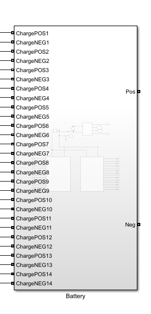Within each module, there are six batteries wired up for charging and discharging along with receiving thermal input as shown below.

For the charging circuit, the four subsystems that are needed are the Battery Module Info, Charge & Discharge Control Functions, Discharge Control Circuit, and Charging Circuit.
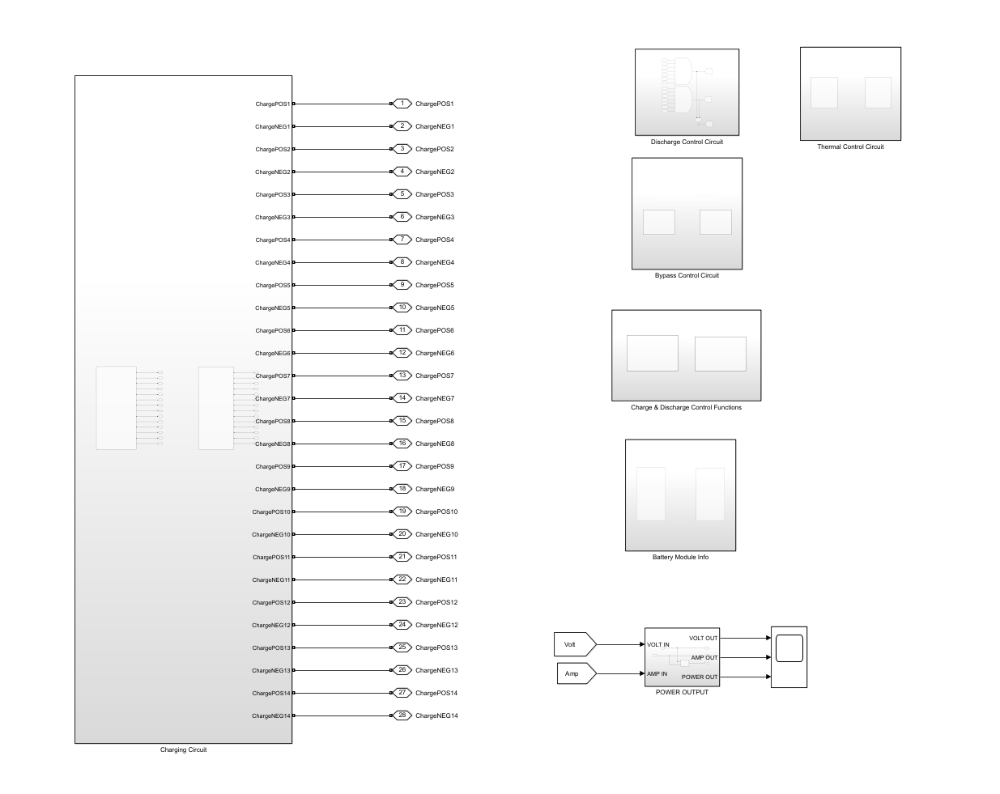
The Battery Module Info subsystem is further broken down into two more subsystems, one for each battery pack shown below.

In each of the battery pack subsystems, we have a Battery Module Info subsystem for each module. Each of these subsystems are connected with a FROM block going into the subsystem and the subsystem outputs to a scope block that will output the State of Charge (SOC), Current (A), voltage (V), and Cell Temperature (oC), shown below.
 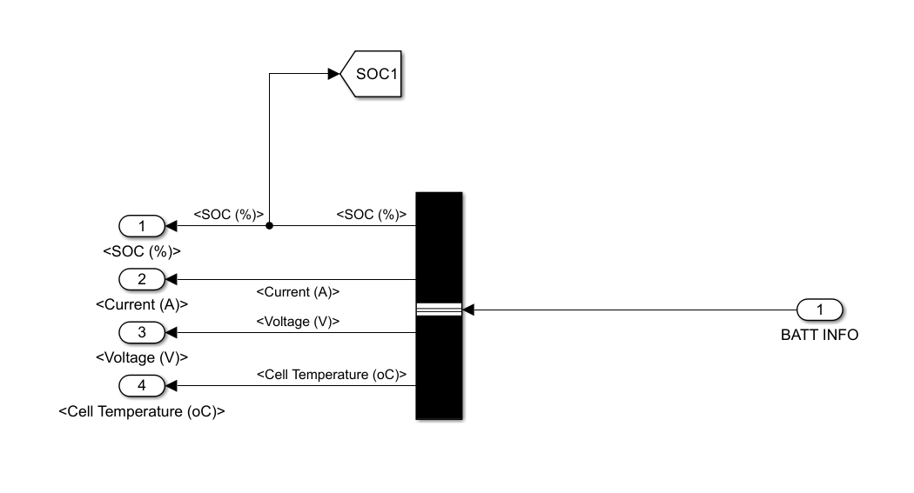
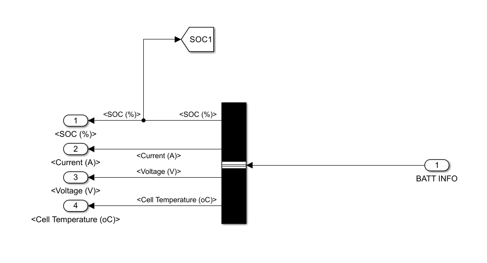

The Charging Circuit subsystem supplies the capabilities to recharge the batteries to 2.2V and an average ampere hour of 11573.9 ±117.6A. The wiring is routed from this subsystem to the battery Conex container through the connection ports.

The Charging Circuit subsystem is broken into two subsystems, one for each battery pack as shown above. Each subsystem is further broken down into three battery chargers’ subsystems to charge seven battery modules as shown below.


The battery chargers are further broken down into a 3-phase battery charger subsystem and a charge circuit subsystem as shown above. The 3-phase battery charger subsystem was designed due to a part that was researched about industrial grade battery chargers which supplied 24V, 500A and had a 3-phase output which each phase could power another system.
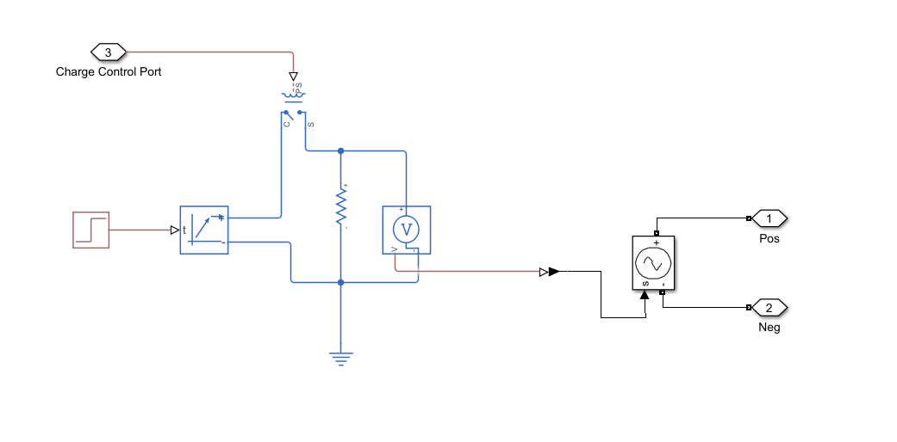The Battery Charger (phase) subsystem that is created supplies 2.5V, 500A output as shown on the previous page. The charger block is set to 2.5V, 500A, and activates on a rising edge input. A physical (PS) step is utilized to turn on the system at time (t) greater than 0. The positive terminal is router through a single pole single throw (SPST) relay which controls whether the charger system is on or off. Then, afterwards is routed through a 1-ohm resistor to create a current flow. Then a PS controlled voltage source block is connected in parallel to the resistor. The signal is tapped off through the v terminal and is routed into a PS-Simulink converter which turns the physical signal into a Simulink signal. That Simulink signal is thrown into a Simulink controlled voltage source block which will out 2.5V and 500A. The Simulink controlled voltage source is connected to a positive and negative connection port which will then head to the charge circuit subsystem.

The charge circuit subsystem controls the relays which connect the battery chargers to the batteries. When ChargingOn equals 1 from the Charge & Discharge Control Function subsystem, it will activate the ideal switch blocks which connects the In connection ports to the Out connection ports.
Before charging can commence, the system must check the SOC of the batteries in each module. The battery is wired up to send the battery information using the GOTO block to the Battery Module Info subsystem in the control Conex Box.
The SOC from the Battery Module Info subsystem is then routed to the Charge & Discharge Control Functions subsystem. It is inputted in the MATLAB Function block where it checks if it is less than 30%. Once it determines that it is below that value, it will output 1 for ChargingOn and 0 for LoadOn. The LoadOn is sent to the Discharge Control Circuit subsystem. While the ChargingOn is sent to the charging circuit as well as ideal switches within the battery modules.
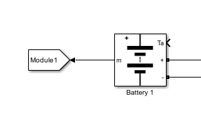 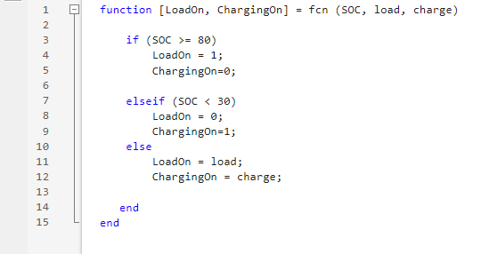The batteries must be isolated thus breaking all series connections and putting them in parallel connections. This is accomplished by opening all the relays between modules and batteries shown on the next two pages. These relays are typically deenergized open. Currently, the setup for the relays utilizes binary input, 0 is open and 1 is closed. The AND gate shown below will output 0 to the relays due to the input LoadOn being 0 from the Charge & Discharge Control Function subsystem.
 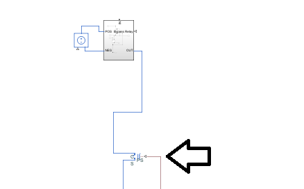
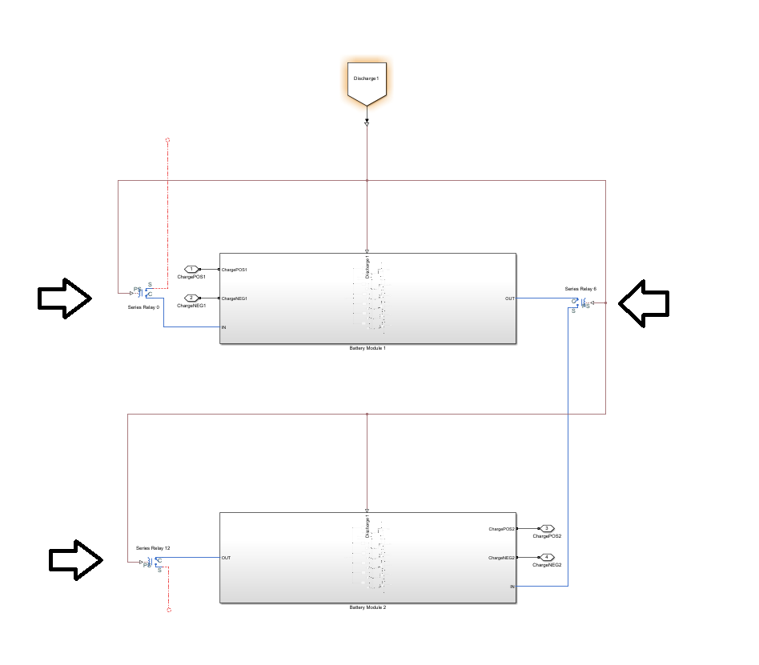
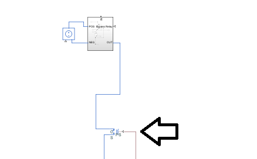
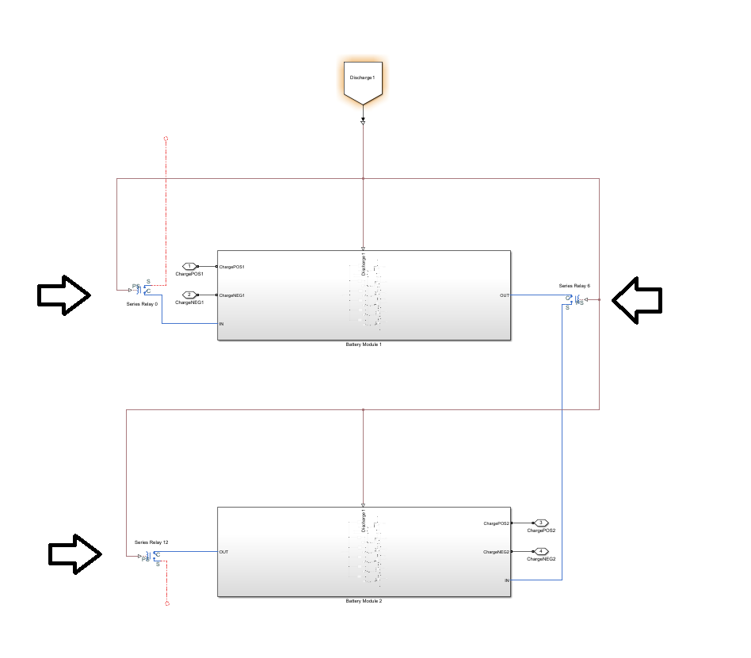
Those series relays are just a rough breakdown of which ones to locate in the battery module circuit. Additionally, prior to charging commencing, another set of relays must be energized, relay set to 1, to the closed position to connect all the batteries in parallel within the module shown on the next page. The ChargingOn FROM block from the Charge & Discharge Control Function subsystem will energize these relays because it will input a 1 into them.

Once all the relays are in the correct position to commence charging, the system now looks like the six batteries connected in parallel with two wires from the control Conex container, one for positive terminals and the other for the negative terminals. A rough breakdown of how the system should act once the relays are in the correct position is shown on the next page, showing two of the six batteries in parallel.
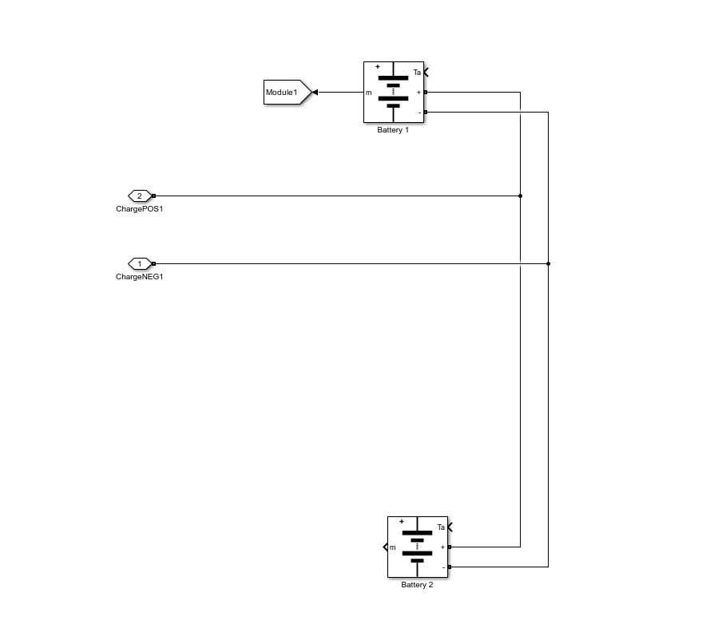While this is happening in the battery Conex container, the controls Conex container is prepping the battery chargers to connect with the batteries. Inside the Charging Circuit subsystem, the Battery Charge (phase) subsystem receives input to connect the SPST relay to output 2.5V, 500A to the Charge Circuit subsystem. The ChargingON equals 1 from the Charge & Discharge Control Circuit subsystem activates the ideal switches which connect the battery chargers to the applicable battery module.
(Battery Pack pics) //Maybe
The 2.5V, 500A from the battery chargers reach the six batteries in parallel within the battery module. Since there are six batteries in parallel, each battery is charged at a rate of 2.5V and 83.33A due to Kirchhoff’s Current Law until the SOC reaches 80% or higher.
The goal of this circuit is to discharge up to 84 molten salt batteries in series. There are a few limitations that must be met: discharging should not occur during charging and must provide four power curves based on time rate of discharge; 2-, 4-, 6-, 8-hours. The Simulation is designed to have two batteries packs in parallel, each containing 42 batteries in series. First, the discharging system is broken up into two areas, the control and battery Conex containers. This is to prevent the electronics from being exposed to the 645±15°C temperature within the battery Conex container. Wire is routed between the Conex containers to connect the charging and control system to the charging system. However, the simulation utilizes GOTO and FROM blocks to connect the wiring for the discharging side between the two containers.
The Discharge Control Circuit subsystem plays a vital role in the charging system by isolating the series relays when the system is in a charging mode. This subsystem utilizes the LoadOn outputs from the Charge & Discharge Control Functions subsystem.
Each module LoadOn FROM block output is the input to an AND gate. The AND gate will check all the inputs and only output 1 when all the inputs are 1. Otherwise, it will output 0. These outputs are sent to GOTO blocks called Discharge1 for battery pack 1 and Discharge2 for battery pack 2. Additionally, the OR gate will check if either or both AND gates is 1 and output 1 to the Discharge FROM block. Otherwise, it will output 0, if both are 0.
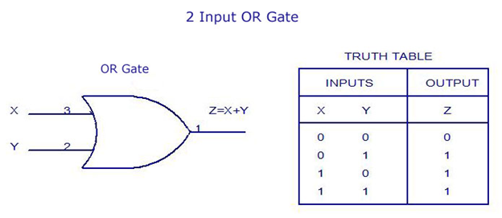The Simulink signal is routed in the subsystem from the Simulink controlled voltage source block to the ideal switch blocks. The ideal switch blocks are controlled by the Discharge FROM block from the Discharge Control Circuit subsystem which should be equal 1 thus energizing the switches. The voltage goes through to the Load resistor which controls how my amperage is being drawn from the system. There are two forms of measurement: the voltage measurement block and the current measurement block. These measurement blocks then output to the Volt and Amp connection ports which will connect to Volt and Amp GOTO blocks which route to the Power Output subsystem. Additionally, there is a Positive and Negative connection port which will allow the connection required for the external team on the outside of the battery Conex container.
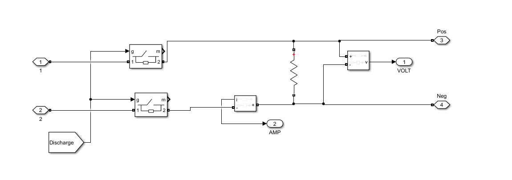Before discharge can commence, the system must check the SOC of the batteries in each module. The battery is wired up to send the battery information using the GOTO block to the Battery Module Info subsystem in the control Conex Box.
The SOC from the Battery Module Info subsystem is then routed to the Charge & Discharge Control Functions subsystem. It is inputted in the MATLAB Function block where it checks if it is greater than or equal to 80%. Once it determines that it is that value, it will output 0 for ChargingOn and 1 for LoadOn. The LoadOn is sent to the Discharge Control Circuit subsystem. While the ChargingOn is sent to the charging circuit as well as ideal switches within the battery modules.
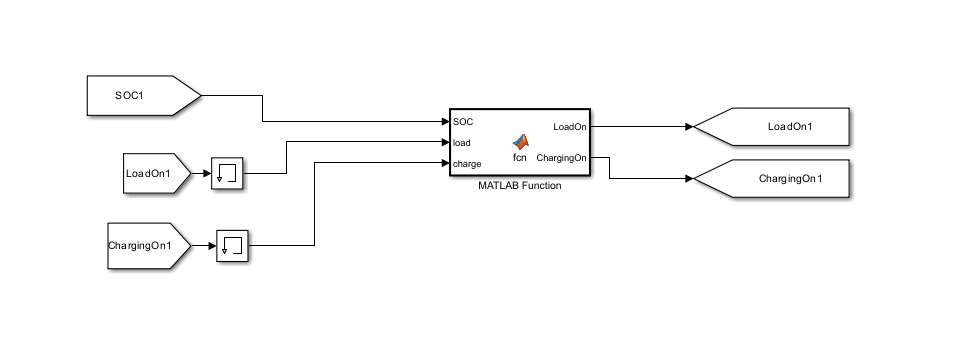The batteries must be connected in series and isolating the parallel connections. This is accomplished by closing all the relays between modules and batteries shown on the next two pages. These relays are typically deenergized open. Currently, the setup for the relays utilizes binary input, 0 is open and 1 is closed. The AND gate shown below will output 1 to the relays due to the input LoadOn being 1 from the Charge & Discharge Control Function subsystem.
Those series relays are just a rough breakdown of which ones to locate in the battery module circuit. Additionally, prior to discharging commencing, another set of relays must be deenergized, relay set to 0, to the open position to prevent the batteries from being connected in parallel within the module shown on the next page. The ChargingOn FROM block from the Charge & Discharge Control Function subsystem will deenergize these relays because it will input a 0 into them.
Once all the relays are in the correct position to commence charging, the system now looks like the six batteries connected in series within each battery module. All the modules within the battery pack are connected in series. A rough breakdown of how the system should act once the relays are in the correct position is shown on the next page, showing two of the six batteries in series. The battery is connected to a voltage measurement. The voltage measurements outputs to a Simulink-PS converter which will transform the Simulink signal to physical signal. That physical signal is routed into a physical controlled voltage source block. That physical controlled voltage source block outputs into the Bypass subsystem. The relays in between the Bypass subsystems are energized closed, thus making the system act as if it is just a wire connecting the two subsystems.
 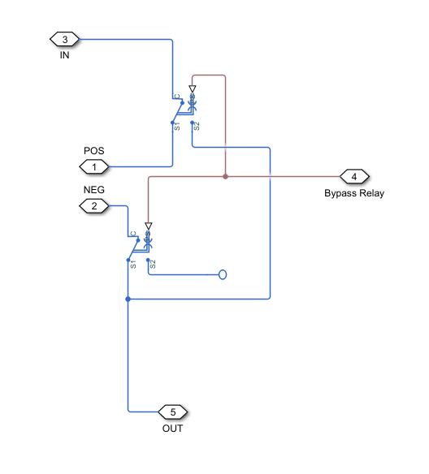
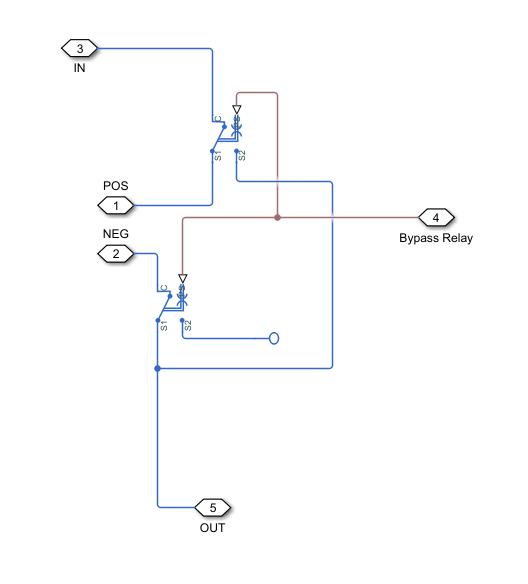
For the standard discharge analysis using all 84 batteries, we will neglect energizing the single pole double throw (SPDT) relay and they will be left in the deenergized position. The IN connection port is either connected to the Positive connection port for the battery module or to the previous Bypass subsystem outside of this subsystem. The POS and NEG connection port in the Bypass subsystem is connected to the positive and negative terminal of the physical controlled voltage source block. Finally, the OUT connection port is connected to the next Bypass subsystem or the negative connection port for the battery module. With these relays deenergized, it puts all the physical controlled voltage source blocks in series which is similar to having the batteries in series. The analysis of energizing the Bypass relay with be discussed later on in the manual.

The modules within the battery packs are now all in series and become the output for each battery pack. The battery packs are connected in parallel routed to the physical controlled voltage source block. The output of the physical controller voltage source goes through a PS-Simulink converter to convert the physical signal into a Simulink signal. The Simulink signal is then sent into a Simulink controlled voltage source and routed into the Discharge Circuit Subsystem
The voltage goes through to the Load resistor which controls how my amperage is being drawn from the system. There are two forms of measurement: the voltage measurement block and the current measurement block. These measurement blocks then output to the Volt and Amp connection ports which will connect to Volt and Amp GOTO blocks which route to the Power Output subsystem. Additionally, there is a Positive and Negative connection port which will allow the connection required for the external team on the outside of the battery Conex container.
This shows the output for the external team to connect to for their portion of the system.
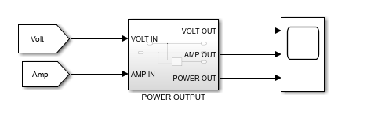 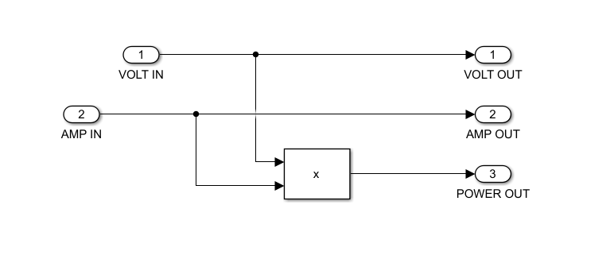The voltage and amperage FROM blocks from the discharge circuit in the battery Conex container are routed into the Power Output subsystem when they are both routed out immediately and through a Product block which creates the power curve. The three signals become the outputs to the Power Output subsystem into a scope block to display the discharge results.
The Charge & Discharge Control Functions subsystem is an automatic process that will discharge the batteries when the SOC is greater than or equal to 80% and charge the batteries when the SOC reaches 30%.
The subsystem is broken into two subsystems, one for each battery pack as shown above. Each battery pack is further broken down by a function subsystem corresponding to the module that they control as shown below.
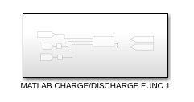Inside the module function subsystem, we have the circuit above. The FROM block containing the SOC information comes from the battery info module subsystem and the MATLAB Function block receives it as an input. Furthermore, two more inputs LoadOn and ChargingOn are FROM blocks that come from the GOTO blocks that are the outputs of the MATLAB Function block. However, the inputs for LoadOn and ChargingOn must be routed to a memory block prior to being inserted into the MATLAB Function block. The memory block was inserted to fix an issue where the MATLAB Function block did not like to receive direct input from its outputs. The memory block also takes the inputs and iterates them one step in the past. Thus, changing the discharge/charge rate of 80% and 30% to 90% and 10%, oscillating in between those stages as shown below. The outputs of the MATLAB Function block are routed to GOTO blocks which will be sent to the Charging Circuit subsystem, battery modules, and Discharge Control Circuit.

The MATLAB Function block takes three inputs: the SOC, LoadOn which is one iteration in the past, and ChargingOn which is also one iteration in the past. The first statement checks if the SOC is greater than or equal to 80% which controls the discharge portion. If the module’s SOC meets this statement, then it will enter discharge mode by setting LoadOn to 1 and ChargingOn to 0 which will activate applicable relays described later in the manual. The second statement checks if the SOC is less than 30% which controls the charge portion. If the module’s SOC meets this statement, then it will enter charge mode by setting LoadOn to 0 and ChargingOn to 1 which will activate applicable relays described later in the manual. The third statement says that if it is greater than or equal to 30% and less than 80%, that it will output whatever it was system was last doing by utilizing the inputs from LoadOn and ChargingOn. Since LoadOn and ChargingOn inputs are one iteration in the past, the system at times will go beyond the 30% and 80% before realizing it. Thus, it creates the discrepancy of going down to 10% for discharging and up to 90% for charging that was shown above.
The power output subsystem takes the output voltage and amperage of the system while discharging and displays them along with the power curve. The voltage and amperage FROM blocks from the discharge circuit in the battery Conex container are routed into the Power Output subsystem when they are both routed out immediately and through a Product block which creates the power curve. The three signals become the outputs to the Power Output subsystem into a scope block to display the results.
The goal of this circuit is to allow the user to simulate different amounts of batteries in the system up to 84 batteries. The limitations that brought about this requirement is the amount of space in a Conex container when all the batteries, insulation, wiring, and more protective systems. First, the Bypass system is broken up into two areas, the control and battery Conex containers. This is to prevent the electronics from being exposed to the 645±15°C temperature within the battery Conex container. Wire is routed between the Conex containers to connect the bypass system.
For the bypass circuit, only one subsystem is required in the Controls Conex container called the Bypass Control Circuit subsystem.
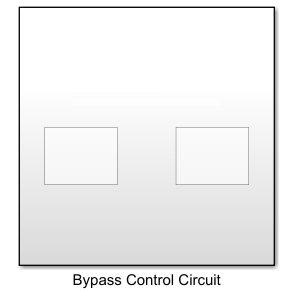 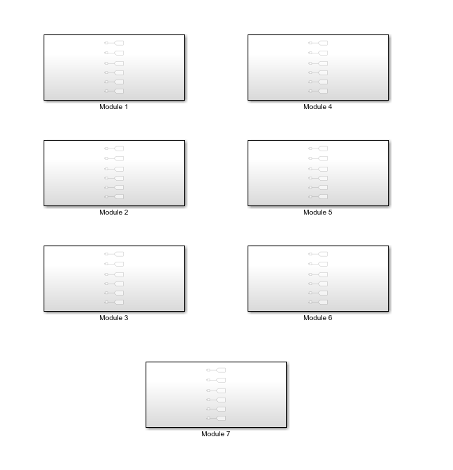
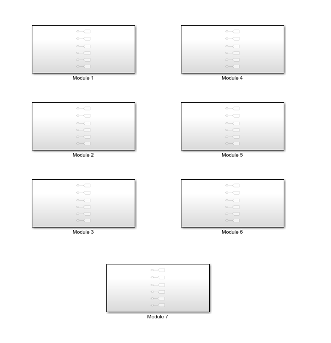
The Bypass Control Circuit subsystem is broken down into two subsystems, one for each battery pack. Each battery pack is further broken down into the seven module subsystems in the battery pack.

Inside each module is a series of GOTO blocks that will send signals to their applicable Bypass subsystem in their Battery Module subsystem in the Battery Conex container. This system is incomplete due to time constraints. What this system was originally designed to do was take user inputs on how many batteries they would like to simulate and send out a signal to applicable Bypass subsystems to energize them thus essentially bypassing that battery.
The IN connection port is either connected to the Positive connection port for the battery module or to the previous Bypass subsystem outside of this subsystem. The POS and NEG connection port in the Bypass subsystem is connected to the positive and negative terminal of the physical controlled voltage source block. Finally, the OUT connection port is connected to the next Bypass subsystem or the negative connection port for the battery module. With these single pole double throw (SPDT) relays deenergized, it puts all the physical controlled voltage source blocks in series which is similar to having the batteries in series. However, when the Bypass FROM blocks inputs a 1 into these SPDT relays, it will energize the relays. This causes the connections coming from the physical controlled voltage source blocks to become an open circuit. Then the IN connection port becomes routed directly to the OUT connection port. This bypass circuit takes the battery out of the discharge simulation thus decreasing the voltage and amperage that will make it to the Power Output Subsystem.
The goal of this circuit is heat up the batteries into a molten state, temperature of 645±15°C. Limitations is the system needs to heat up within six hours. First, the charging system is broken up into two areas, the control and battery Conex containers. This is to prevent the electronics from being exposed to the 645±15°C temperature within the battery Conex container. Wire is routed between the Conex containers to connect the bypass system.
The Thermal Control Circuit subsystem controls turning on and off the thermal system. Heating up or cooling off the batteries. The Thermal Control Circuit subsystem is broken up into two subsystems, one of each battery pack.
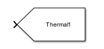Inside the battery pack subsystem are a series of GOTO blocks responsible for each battery module. This is incomplete due to time constraints. The system was supposed to be designed for turning on the thermal system in each battery module when it is time to heat the batteries.

In the battery module, the four things we are concerned about are the Thermal FROM block, the Thermal subsystem, the battery, and the Module GOTO block. The Thermal FROM block will tell the Thermal Subsystem to turn on or off. The Thermal subsystem is the thermal power supply which will heat up the batteries. The batteries will heat up and output its info to the Module GOTO block which will report its status in the Battery Module Info subsystem.
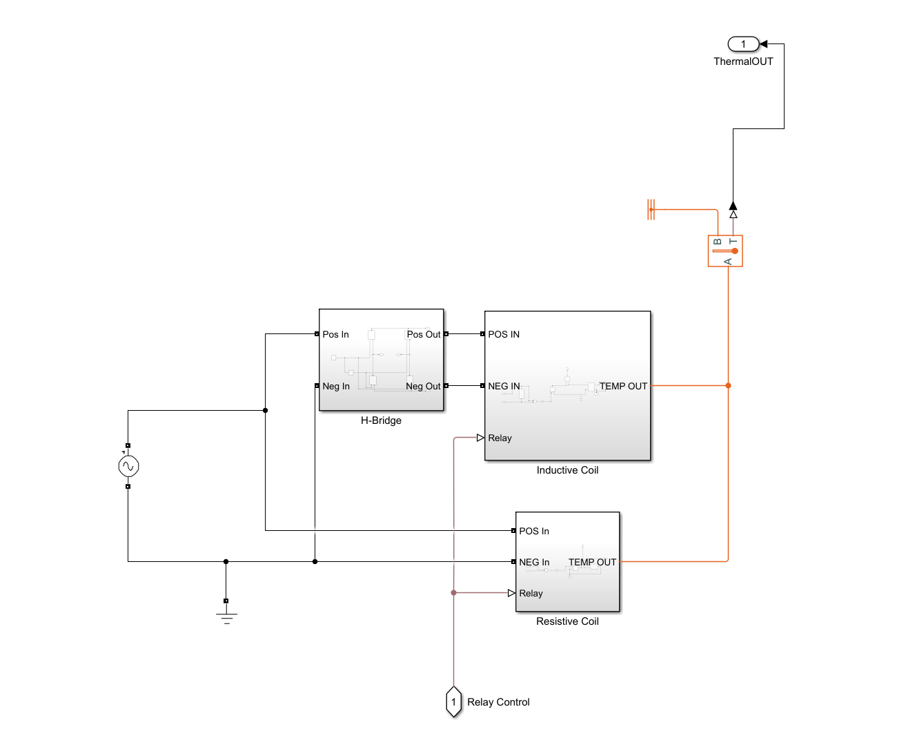Inside the Thermal subsystem there is a 208V, 60Hz input signal into the H-bridge subsystem and the resistive coil subsystem. The Thermal FROM block input goes into the Inductive coil and resistive coil subsystem. The Inductive coil and resistive coil subsystems will output a temperature signal to the temperature sensor. The temperature sensor will read the temperature being output from the subsystems and outputs a physical signal to a PS-Simulink converter which will turn the physical signal into a Simulink. The Simulink signal will then go into the battery to heat it up.

The H-Bridge takes the 208V, 60Hz as input into the four thyristor. The thyristor gates are controlled by a pulse generator that oscillates at 50kHz. However, the top right and bottom left are 180 degrees out of phase from the top right and bottom right. This out of phase behavior transformed the 208V, 60Hz signal into 208V, 50kHz and outputs it as the input into the Inductive Coil subsystem.
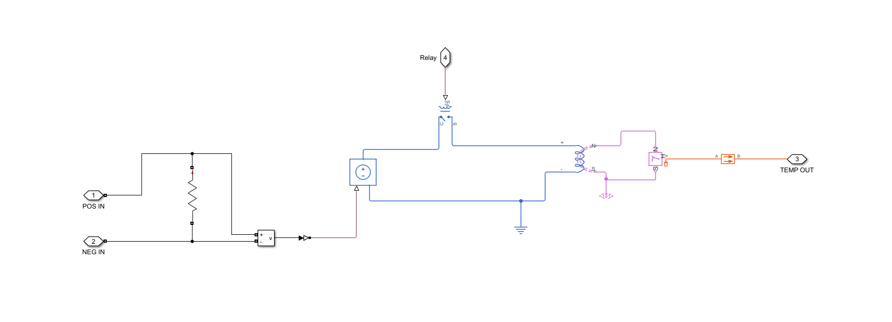The 208V, 50kHz signal comes into the Inductive Coil subsystem and goes through the resistor which produces 44A requirement. The Voltage measurement is connected in parallel to the resistor to then output to a Simulink-PS converter to transform from a Simulink signal to a physical signal. The physical signal becomes the input into the physical controlled voltage source which produces the 208V, 50kHz, and 44A signal. The output is routed through a SPST relay controlled by the Thermal FROM block, Afterwards, the signal is routed to the electromagnetic converter block which changes the voltage signal into a magnetic signal. The magnetic signal is then routed to the eddy current block to convert the magnetic signal into a thermal signal as an output. That output is then routed into a conductive heat transfer to send out towards the temperature sensor and prevents the heat from backflowing into this system.

The 208V, 60Hz signal comes from the AC power source as this subsystem’s input. The signal is then connected to a voltage measurement which will output to a Simulink-PS converter which will transform the Simulink signal to a physical signal. The physical signal is routed into the physical controller voltage source block which will produce 208V, 60Hz signal. The signal is routed to a SPST relay which is controlled by the Thermal FROM block. After the relay, the signal goes through a thermal resistor which produces the 73A requirement which heats the resistive coil producing a thermal output. The thermal output is then routed to the temperature sensor.
(All these need pic to matlab reference page entry)
During our time working on the simulation, we encountered three issues with the Simscape battery. The first issue was that the battery would not compile past 1.86s when the resistance is set at 0.0021 ohms. We fixed this issue by increasing the ohms to 2 for the batteries. The second and third issues were that the Simscape batteries had self-charging and self-discharging capabilities that did not respond to external circuits. We fixed these issues by changing our batteries to Simulink batteries; however, this took us a while as we had to redesign the whole simulation from the ground up.
Simulink simulation program does not easily allow for connections between different libraries. The blocks must use an intermediate connection to connect the blocks together. This is why our group used a lot of sensors/measurements/controlled source/converter blocks to achieve connecting the blocks together.
The size of this circuit is massive, and we had to redesign it from the ground up as we were suffering time constraints due to new requirements for the project. This has caused the simulation to have performance issues. It takes five to 10 minutes to load up and it is a slow process currently to make any changes. We have not discovered the fix for these performance based issues due to time constraints.